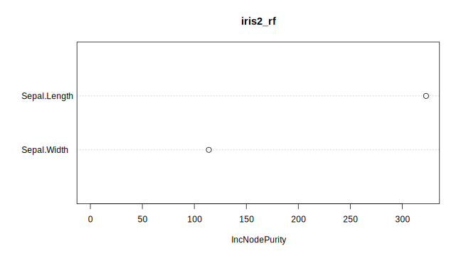
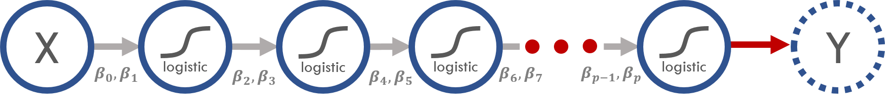

4.5 Regressão Logística em: a menor deep learning do mundo
4.5.1 Objetivos
A finalidade do post é:
- aprender a fazer uma regressão logística com o keras
- aprender a fazer um PCA com o keras
- aproximar o Deep Learning do que já havia de conhecido pela maioria dos analistas de dados.
- instigar a todos que vieram antes do deep learning a estudar e a ficar à vontade com as novidades em torno dela.
- mostrar que muitos profissionais inseridos na área de machine learning já conheciam grande parte do que o deep learning usa.
- levantar discussão sobre alguns mitos que não são construtivos para a comunidade dos analistas de dados.
4.5.2 Motivação
Li estatísticos, cientistas da computação, engenheiros de dados a afins questionando o futuro do Machine Learning e se tudo que conhecíamos antes sobre modelagem estatística havia ficado obsoleto (como essa pergunta no Quora: Should I Quit Machine Learning?).
E em conversas com pessoas próximas percebia certa ufania pela novidade e frustração pela “obsolência” do que se havia investido tempo estudando antes.
Para piorar, aproveitadores pegaram jacaré nessa onda para fazer marketing malicioso com o intuito de desvalorizar e dividir a comunidade dos analistas de dados. Algo bem similar com o que aconteceu com outras palavras da moda como data science, big data, Python versus R e a própria machine learning. Antes havia a clássica propaganda de que a empresa X utilizava MACHINE LEARNING em vez de modelos preditivos. Agora a coisa evoluiu e apelam para o uso da palavra Deep Learning.
O que realmente importa:
- Deep Learning é uma grande novidade e colocou a Inteligência Artificial em evidência.
- Quem manjava Machine Learning antes vai conseguir aplicar 95% do seu conhecimento nas aplicações de Deep Learning (incluindo bayesianismo, bootstrap, inferência, probabilidade e a boiada toda).
- Deep Learning tem que ser visto como uma ferramenta a mais na caixa do analista de dados e não um substituto.
E para abordar essa questão resolvi ajustar uma regressão logística usando deep learning para que todos que já fizeram uma regressão logística antes possam dizer que já fizeram uma rede neural também! Confesso ter uma leve motivação provocativa, mas qual graça teria se assim não fosse? =P
4.5.3 O que faremos
- Regressão logística para \(Y_1\) (com
glm) - Deep Learning para \(Y_1\) (com
keras) - Mostrar que regressão logística não é o melhor para \(Y_2\) e que Deep Learning vai além da limitação dos modelos lineares (com
glm) - Deep Learning para \(Y_2\) (com
keras)
Mãos à obra.
4.5.4 Pacotes
4.5.5 Regressão logística versus Deep Learning
Hora de ajustar modelos para os mesmos dados de duas maneiras diferentes: regressão logística com glm e deep learning com o keras.
4.5.6 Dados simulados
O código acima criou duas variáveis respostas (targets). Em representação matemática, elas possuem as seguintes definições:
Resposta y_1
\[E[Y_1|x] = \text{logistic}{(-1 + 2x)} = \frac{1}{1 + e^{{-(-1 + 2x)}}}\]
Resposta y_2
\[E[Y_2|x] = \text{logistic}{(-1 + 2\tanh(-1 + 2x))} = \frac{1}{1 + e^{{-(-1 + 2\tanh(-1 + 2x))}}}\]
\(x\) é linear no logito de y_1, então a regressão logística vai cair bem para descobrir os parâmetros \(-1\) e \(2\).
Porém, \(x\) não é linhar no logito de y_2 e por isso a regressão logística não conseguirá representar fielmente o gerador de y_2.
OBS 1: A forma \(\text{logistic}{(\beta_0 + \beta_1\tanh(\beta_2 + \beta_3X))}\) tem parâmetros dentro do função tanh, o que significa que a nossa hipótese para \(E[Y_2|x]\) não é mais linear nos parâmetros. Por isso que modelos lineares (como o nome sugere) não são mais indicados. E a não linearidade é uma das generalizações que as redes neurais nos fornece! (sim, isso é muito relevante)
OBS 2: é claro que nesse caso bem simples de uma variável conseguiríamos inspecionar os dados para chegar em boas transformações de \(x\) de tal forma que o ajuste da logística ficasse tão bom quanto o de uma rede neural, mas se acrescentássemos muitas outras variáveis aí a coisa complicaria!
Em representação de redes neurais, as fórmulas acima ficam assim:
Resposta y_1

Resposta y_2
O que era função de ligação no GLM, em redes neurais virou função de ativação (no final eu falo mais sobre vocabulários que mudaram).
4.5.7 Olhada nos dados
O gráfico da direita mostra que x é proporcional ao logito das probabilidades de y_1 (em vermelho) como era pra ser por termos construído assim.
Já com o y_2 (em azul) ainda ficou parecendo uma sigmoide mesmo depois da transformação.
4.5.8 Ajuste de modelos
4.5.8.1 Regressão logística para \(Y_1\) (com glm)
As estimativas ficaram bem próximas dos verdadeiros valores \(\beta_0 = -1\) e \(\beta_1 = 2\).
A acurácia foi de 85%.
4.5.8.2 Deep Learning para \(Y_1\) (com keras)
Vamos montar nossa hipótese para \(E[Y_1|x]\).
Model
_____________________________________________________________
Layer (type) Output Shape Param #
=============================================================
modelo_keras_1 (InputLayer) (None, 1) 0
_____________________________________________________________
camada_unica (Dense) (None, 1) 2
_____________________________________________________________
link_logistic (Activation) (None, 1) 0
=============================================================
Total params: 2
Trainable params: 2
Non-trainable params: 0
_____________________________________________________________A hipótese construída tem 2 parâmetros. Parece que está certo! \(\beta_0\) e \(\beta_1\).
Agora é a vez da função de perda.
Como nosso objetivo é construir uma regressão logística, nós vamos escolher a função de perda binary_crossentropy que é sinônimo de deviance da logística, termo mais comum no mundo da estatística.
A métrica 'accuracy' não entra no otimizador da função de perda, a gente usa ela para comparar os modelos que criamos. No caso vamos comparar com o modelo glm ajustado acima (mas, por exemplo, em caso de eventos raros a 'accuracy' não vai ser muito informativa, daí poderíamos usar 'auc', 'gini', etc.).
modelo_keras_1 %>% compile(
loss = 'binary_crossentropy',
optimizer = optimizer_sgd(lr = 0.4),
metrics = c('accuracy')
)
modelo_keras_1_fit <- modelo_keras_1 %>% fit(
x = df$x,
y = df$y_1,
epochs = 20,
batch_size = 1000,
verbose = 0
)Resultados idênticos! Era para assim ser porque construímos a mesma hipótese e a memsa função de perda do glm.
4.5.8.3 Regressão logística para \(Y_2\) (com glm)
Para modelar \(Y_2\) vamos pisar em terrenos que os modelos lineares não pisam.
Primeiro tento ajustar uma curva uasndo x e a transformação tanh(x). Esse preditor eu suponho que escolhi depois de uma minuciosa e demorada inspeção dos dados (tentei simular mais ou menos o que eu faria numa modelagem onde eu que teria que construir as features na mão).
Acurácia de 82%, nada mal. Mas a hipótese e parâmetros foram distintos do verdadeiro gerador dos dados. Vamos usar redes neurais para resolver o problema de não linearidade.
4.5.8.4 Deep Learning para \(Y_2\) (com keras)
Hipótese para \(E[Y_2|x]\).
Model
_____________________________________________________________
Layer (type) Output Shape Param #
=============================================================
modelo_keras_2 (InputLayer) (None, 1) 0
_____________________________________________________________
camada_um (Dense) (None, 1) 2
_____________________________________________________________
tanh_de_dentro (Activation) (None, 1) 0
_____________________________________________________________
camada_dois (Dense) (None, 1) 2
_____________________________________________________________
link_logistic (Activation) (None, 1) 0
=============================================================
Total params: 4.0
Trainable params: 4.0
Non-trainable params: 0.0
_____________________________________________________________
Quatro parâmetros ‘treináveis’, é isso aí! Dois parâmetros de dentro do tanh e os dois parâmetros de fora. Precisamos que o keras nos devolva -1, 2, -1 e 2 do jeito que geramos os dados.
Função de custo
Precisão de 82% também, mas agora os parâmetros estão bem próximos daqueles que geraram os dados! Acabamos de ver um conjunto de parâmetros sendo encontrados mesmo com relação não linear entre eles e a média.
A precisão entre os dois modelos até que se equiparou, mas o gráfico das hipóteses encontradas (abaixo) mostra que a curva do glm está pior do que a curva do keras.

4.5.8.5 (Bônus) PCA com autoencoer
PCA e autoencodes servem na prática para reduzir a dimensionalidade dos dados. PCA é um caso particular de autoencoder com apenas uma camada e funções de ativação lineares. O post Construindo Autoencoders ensina a fazer e recomendo a leitura.
Resumo: autoencoder é uma técnica incrível que generaliza o PCA.
4.5.9 Discussão
Na minha opinião aconteceu de que muita coisa antiga e consagrada teve seu nome mudado e apresentado como novo e isso acabou ofuscando as grandes contribuições realmente relevantes das pesquisas em torno das redes neurais e do deep learning.
Percebe-se que o Deep Learning generalizou bastante coisa e por isso eu declaro o post bem sucedido se o escrito acima despertou curiosidade em aprender mais sobre deep learning para agregar ao trabalho que já havia sendo feito. Vale mais a pena trazer todos os praticantes de estatística e machine learning juntos nessa novidade do que nos dividirmos.
Acredito que mais do que nunca a fundamentação teórica e interpretações terão seu valor potencializado com a disseminação do deep learning. Com o mito de que deep learning seja uma panaceia e com a facilidade que ela nos trouxe para fazer um modelo preditivo, há o risco de sermos soterrados por caixas pretas feitas por pessoas negligentes com aspectos importantes como interpretabilidade, causalidade e generalização. Talvez o bayesianismo se desponte (mais uma vez) como a solução para problemas qualitativos num mundo cada vez mais obscuro trazendo à luz os excessos dos modelos complexos e os benefícios dos modelos simples.
Puxando o gancho do bayesianismo (e inferências em geral), os resultados já obtidos em cima de modelos lineares ainda se aplicam em deep learning. E também temos a vantagem de que todas as demais ferramentas que se usam em deep learning e que não afetam a linearidade dos parâmetros podem ser utilizadas, como convolucional, recorrente, max pooling, drop out, autoencoder e tantas outras.
Para finalizar, na prática sugiro aplicar deep learning com o Keras, um pacote incrível que usa o tensorflow ou o theano por trás. Acredito que vocês verão muitos posts sobre o assunto por aqui! (podem encher o saco do Dan Falbel, um dos sócios da curso-r.com, que está envolvido no desenvolvimento desse pacote em R =]).
4.5.10 Curiosidades
4.5.11 N-ésimo menor deep learning
Vimos acima o menor e o segundo menor Deep Learnings (que de profundo não têm nada =P). Mas podemos ir o tão profundo quanto quisermos! A representação de redes neurais sai fácil:

Já a representação matemática fica esquisita:
\[E[Y|x] = \frac{1}{1 + \exp{\left(\beta_{p-1} + \beta_p\frac{1}{\frac{\vdots}{1 + \exp{\left(\beta_{6} + \beta_{7}\frac{1}{1 + \exp{\left(\beta_4 + \beta_5\frac{1}{1 + \exp{\left(\beta_2 + \beta_3\frac{1}{1 + \exp{\left(\beta_0 + \beta_1x\right)}}\right)}}\right)}}\right)}}}\right)}}\]
4.5.12 Vocabulário
Os jargões e termos do deep learning foram herdados de um outro contexto diferente do da modelagem preditiva estudada na estatística e por isso acabaram surgindo inúmeros sinônimos. Alguns deles são:
- função de ativação = função de ligação
- Softmax = verossimilhança da multinomial
- sigmoide = função com formato de S (no tensorflow o padrão é a logistic)
- pesos = parâmetros/betas/coeficientes
- binary crossentropy = deviance da distribuição binomial (regressão logística)
É isso aí, temos que nos manter curiosos, questionar e dialogar. Abs!